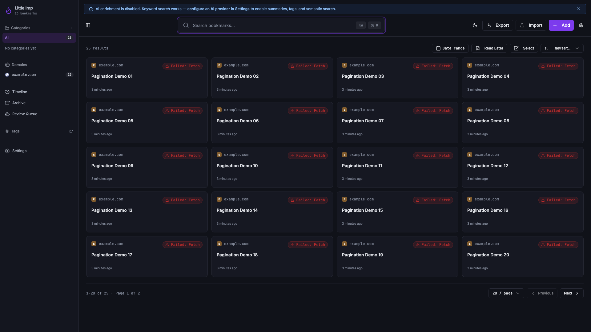
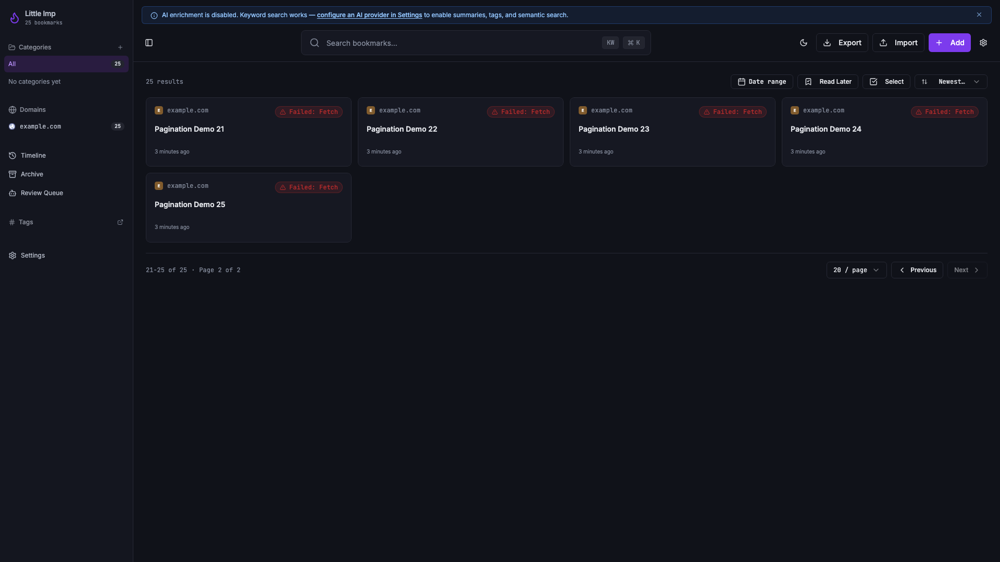
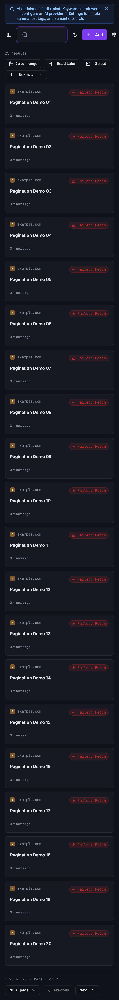

Little Imp Task Report
Library Pagination

Before
The library requested a large fixed bookmark list and rendered only the returned page. Once a daemon response had more results than the visible page, users had no explicit way to navigate to the next slice, change page size, or understand the current result range.
Problem
TASK-114 needed the frontend to consume the daemon pagination contract directly. Pagination also had to stay predictable across search, filters, sort changes, selection mode, empty page recovery, and category/tag scoped views.
Changes Added
- Added shared library pagination state with a default 20-item page size and 20/50/100 page-size choices.
- Sent daemon
limitandoffsetparameters for list and search calls, then exposed current page, total pages, range text, and next/previous helpers fromuseBookmarks. - Added dense library footer controls for page size, current range, total count, and previous/next navigation.
- Reset pagination and cleared page selections when search input, filters, sort, page size, or page changes invalidate the prior selection scope.
- Added empty-page recovery and error states for the main library plus category and tag detail pagination paths.
- Updated e2e mocks so mocked daemon bookmark/search routes honor
limit,offset, and pagination metadata.
Result
The library now displays 1-20 of 25 on the first page, 21-25 of 25 on the second page, disables impossible directions, and clears bulk-selection state when the page changes. Category and tag detail pages can recover from stale empty offsets instead of leaving users stranded on an invalid page.
Verification
npx vitest run src/pages/CategoryDetail.test.tsx src/pages/TagDetail.test.tsx src/pages/Index.test.tsx src/hooks/use-bookmarks.test.tspassed with 49 frontend tests.npx playwright test e2e/business-requirements.spec.ts --grep "paginates the library"passed.- Manual browser pass against an isolated daemon confirmed desktop page 1, desktop page 2, and narrow mobile pagination layouts.
npm run type-checkpassed for frontend and daemon TypeScript.npm run lintpassed with existing Fast Refresh warnings only.npm run testpassed with 255 frontend/script tests. Node printed existingpunycodedeprecation warnings.npm run buildpassed with the existing browserslist age and chunk-size warnings.npm run test:e2epassed with 21 Playwright tests.git diff --checkpassed.
Implementation Notes
The hook resets to page 1 before changing the query shape, so search and filters avoid stale offsets. Selection keys use the raw search input rather than waiting for the debounced query, which prevents bulk selections from persisting after the user starts changing the search scope. If a later mutation shrinks the result set while a higher page is active, the hook and scoped detail pages use daemon pagination metadata to navigate back to the highest valid page.
Additional Screenshots


Files Changed
src/hooks/use-bookmarks.tssrc/hooks/use-bookmarks.test.tssrc/pages/Index.tsxsrc/pages/Index.test.tsxsrc/pages/CategoryDetail.tsxsrc/pages/CategoryDetail.test.tsxsrc/pages/TagDetail.tsxsrc/pages/TagDetail.test.tsxe2e/business-requirements.spec.tse2e/core-journey.spec.tse2e/mock-daemon.tstasks/done/TASK-114-library-pagination.mdtasks/README.mddocs/task-reports/2026/06/2026-06-01-task-114-library-pagination/index.htmldocs/task-reports/2026/06/2026-06-01-task-114-library-pagination/assets/01-after-desktop-page-1.pngdocs/task-reports/2026/06/2026-06-01-task-114-library-pagination/assets/02-after-desktop-page-2.pngdocs/task-reports/2026/06/2026-06-01-task-114-library-pagination/assets/03-after-mobile.pngdocs/task-reports/2026/06/index.htmldocs/task-reports/2026/index.htmldocs/task-reports/index.html